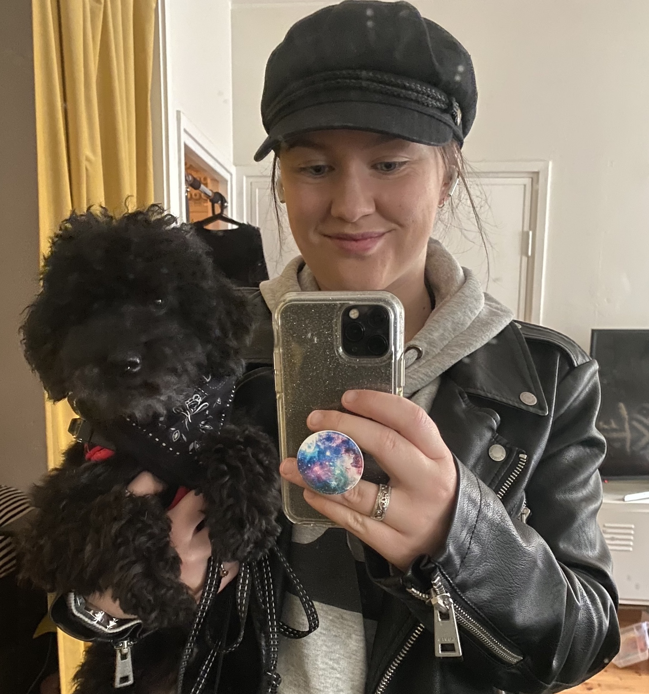

Kuka minä olen

Minä olen Taru Ahonen. Olen 27-vuotias ja tykkään harrastaa musiikkia ja urheilua. Lempi instrumenttini on tällä hetkellä kitara. Osaan kitaran lisäksi soittaa pianoa, ukuleleä, bassoa, ja poikkihuilua.
Olen pelannut koripalloa noin 14 vuotta. Nyttemmin olen kunnostautunut lähinnä TFW eli Training for Warriors treeneissä, jossa harjoitellaan sekä voimaa, räjähtävyyttä sekä peruskuntoa.
Minulla on avopuoliso ja seitsemän vuotias villakoira nimeltä Mika. Mikan kanssa tulee ulkoiltua päivittäin aika paljon vähintään kolme kertaa päivässä.